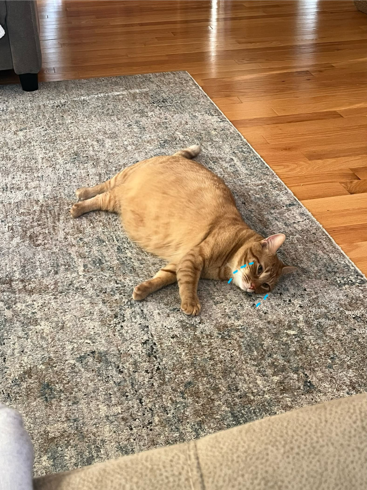
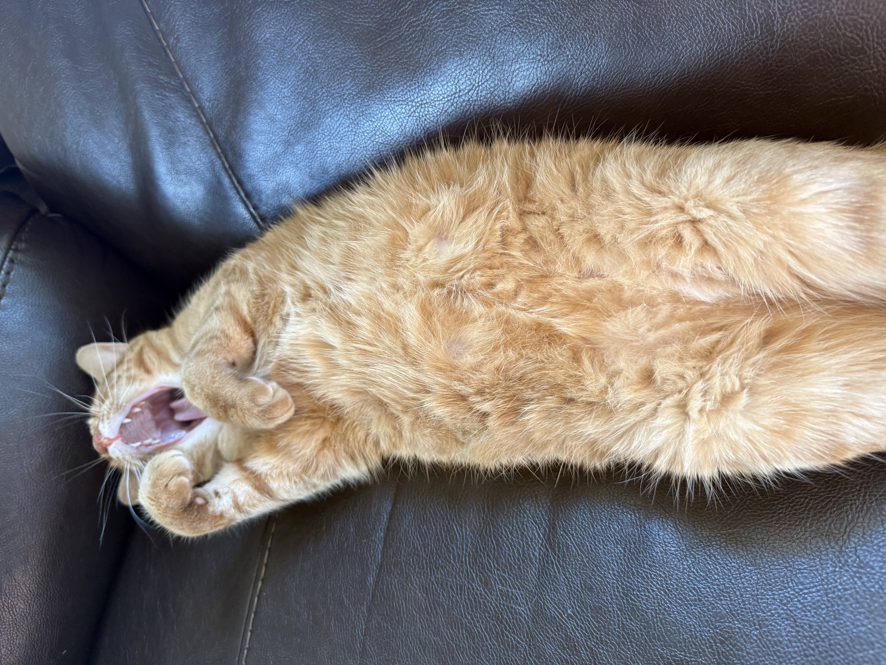
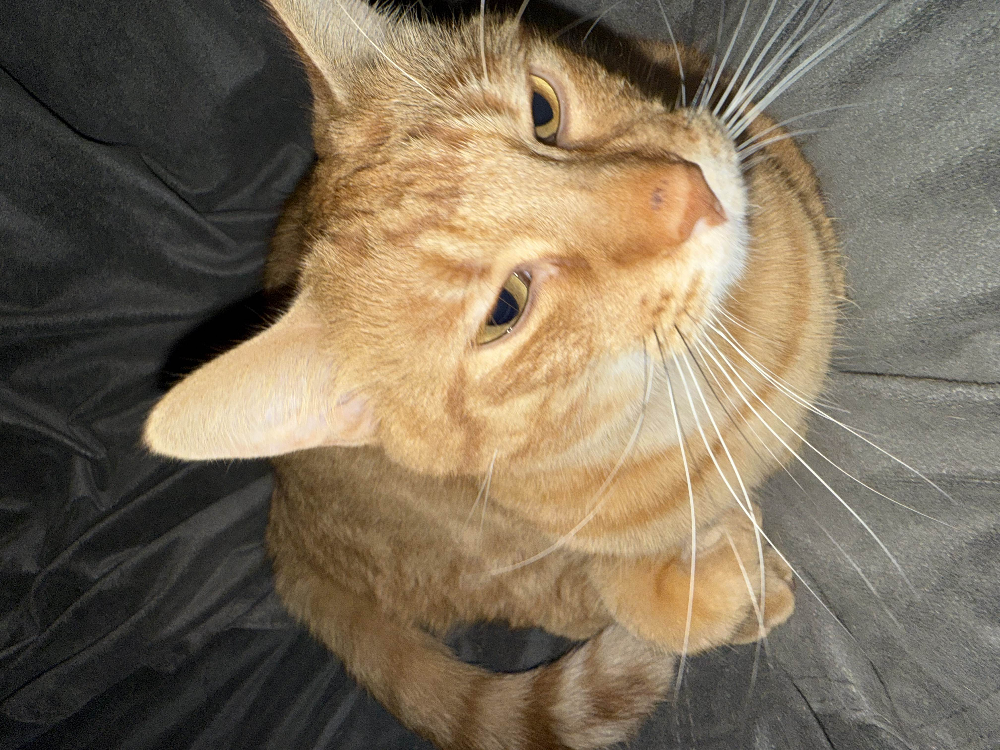
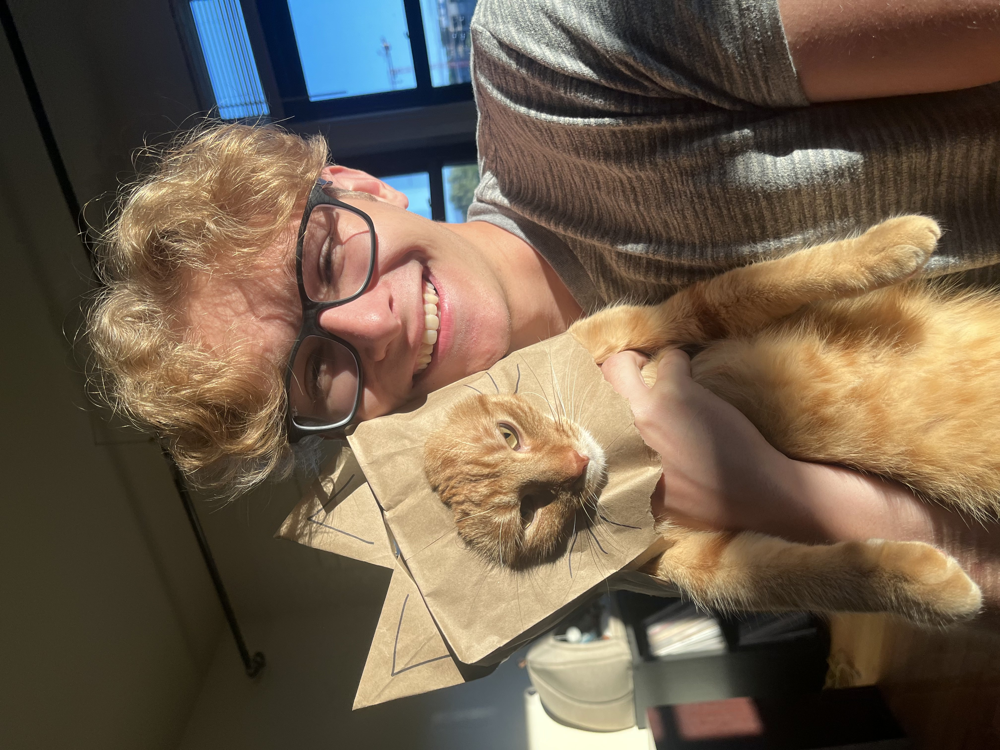

Artie is a pint-sized tornado of personality—fiercely curious and delightfully stubborn one moment, a warm, purring lap buddy the next. He greets mornings with playful zooms and daring acrobatics, demanding attention and the best seat in the room, then melts into quiet affection with gentle head-butts and a rumbling purr when you're ready to sit. His feisty streak keeps life entertaining—missing socks become prized trophies and every cardboard box an expedition—but his loving, loyal heart is obvious in the way he curls up against you at the end of the day. Artie’s mix of mischief and sweetness makes him impossible not to adore.
   